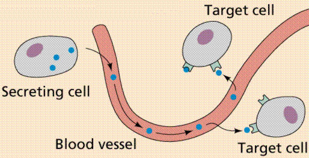
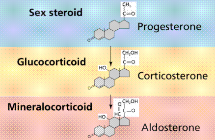
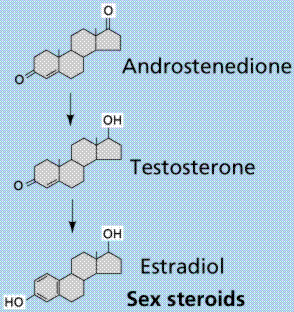
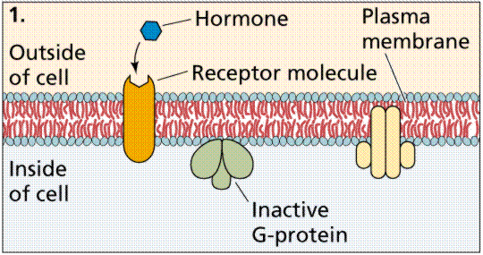
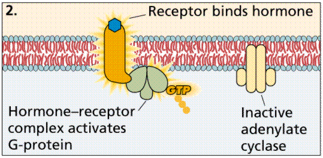
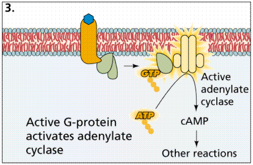
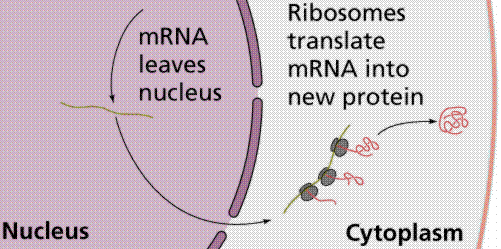
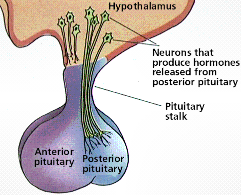
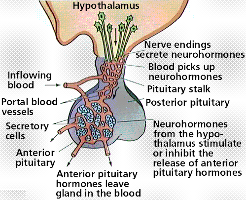
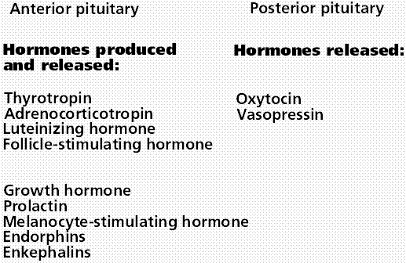

Hormones | Evolution of Endocrine Systems | Endocrine Systems and Feedback
Mechanisms of Hormone Action | Endocrine-related Problems | The Nervous and Endocrine Systems
Other Endocrine Organs | Other Chemical Messengers | Biological Cycles | Learning Objectives | Links
The nervous system coordinates rapid and precise responses to stimuli using action potentials. The endocrine system maintains homeostasis and long-term control using chemical signals. The endocrine system works in parallel with the nervous system to control growth and maturation along with homeostasis.
The endocrine system is a collection of glands that secrete chemical messages we call hormones. These signals are passed through the blood to arrive at a target organ, which has cells possessing the appropriate receptor. Exocrine glands (not part of the endocrine system) secrete products that are passed outside the body. Sweat glands, salivary glands, and digestive glands are examples of exocrine glands.

The roles of hormones in selecting target cells and delivering the hormonal message. Images from Purves et al., Life: The Science of Biology, 4th Edition, by Sinauer Associates (www.sinauer.com) and WH Freeman (www.whfreeman.com), used with permission.
Hormones are grouped into three classes based on their structure:
Steroids are lipids derived from cholesterol. Testosterone is the male sex hormone. Estradiol, similar in structure to testosterone, is responsible for many female sex characteristics. Steroid hormones are secreted by the gonads, adrenal cortex, and placenta.


Structure of some steroid hormones and their pathways of formation. Images from Purves et al., Life: The Science of Biology, 4th Edition, by Sinauer Associates (www.sinauer.com) and WH Freeman (www.whfreeman.com), used with permission.
Peptides are short chains of amino acids; most hormones are peptides. They are secreted by the pituitary, parathyroid, heart, stomach, liver, and kidneys. Amines are derived from the amino acid tyrosine and are secreted from the thyroid and the adrenal medulla. Solubility of the various hormone classes varies.
Steroid hormones are derived from cholesterol by a biochemical reaction series. Defects along this series often lead to hormonal imbalances with serious consequences. Once synthesized, steroid hormones pass into the bloodstream; they are not stored by cells, and the rate of synthesis controls them.
Peptide hormones are synthesized as precursor molecules and processed by the endoplasmic reticulum and Golgi where they are stored in secretory granules. When needed, the granules are dumped into the bloodstream. Different hormones can often be made from the same precursor molecule by cleaving it with a different enzyme.
Amine hormones (notably epinephrine) are stored as granules in the cytoplasm until needed.
Most animals with well-developed nervous and circulatory systems have an endocrine system. Most of the similarities among the endocrine systems of crustaceans, arthropods, and vertebrates are examples of convergent evolution. The vertebrate endocrine system consists of glands (pituitary, thyroid, adrenal), and diffuse cell groups scattered in epithelial tissues.
More than fifty different hormones are secreted. Endocrine glands arise during development for all three embryologic tissue layers (endoderm, mesoderm, ectoderm). The type of endocrine product is determined by which tissue layer a gland originated in. Glands of ectodermal and endodermal origin produce peptide and amine hormones; mesodermal-origin glands secrete hormones based on lipids.
The endocrine system uses cycles and negative feedback to regulate physiological functions. Negative feedback regulates the secretion of almost every hormone. Cycles of secretion maintain physiological and homeostatic control. These cycles can range from hours to months in duration.
Negative feedback in the thyroxine release reflex. Image from Purves et al., Life: The Science of Biology, 4th Edition, by Sinauer Associates (www.sinauer.com) and WH Freeman (www.whfreeman.com), used with permission.
The endocrine system acts by releasing hormones that in turn trigger actions in specific target cells. Receptors on target cell membranes bind only to one type of hormone. More than fifty human hormones have been identified; all act by binding to receptor molecules. The binding hormone changes the shape of the receptor causing the response to the hormone. There are two mechanisms of hormone action on all target cells.
Nonsteroid hormones (water soluble) do not enter the cell but bind to plasma membrane receptors, generating a chemical signal (second messenger) inside the target cell. Five different second messenger chemicals, including cyclic AMP have been identified. Second messengers activate other intracellular chemicals to produce the target cell response.



The action of nonsteroid hormones. Images from Purves et al., Life: The Science of Biology, 4th Edition, by Sinauer Associates (www.sinauer.com) and WH Freeman (www.whfreeman.com), used with permission.
The second mechanism involves steroid hormones, which pass through the plasma membrane and act in a two step process. Steroid hormones bind, once inside the cell, to the nuclear membrane receptors, producing an activated hormone-receptor complex. The activated hormone-receptor complex binds to DNA and activates specific genes, increasing production of proteins.

The action of steroid hormones. Images from Purves et al., Life: The Science of Biology, 4th Edition, by Sinauer Associates (www.sinauer.com) and WH Freeman (www.whfreeman.com), used with permission.
The pituitary gland (often called the master gland) is located in a small bony cavity at the base of the brain. A stalk links the pituitary to the hypothalamus, which controls release of pituitary hormones. The pituitary gland has two lobes: the anterior and posterior lobes. The anterior pituitary is glandular.
The endocrine system in females and males. Image from Purves et al., Life: The Science of Biology, 4th Edition, by Sinauer Associates (www.sinauer.com) and WH Freeman (www.whfreeman.com), used with permission.
The hypothalamus contains neurons that control releases from the anterior pituitary. Seven hypothalamic hormones are released into a portal system connecting the hypothalamus and pituitary, and cause targets in the pituitary to release eight hormones.



The location and roles of the hypothalamus and pituitary glands. Images from Purves et al., Life: The Science of Biology, 4th Edition, by Sinauer Associates (www.sinauer.com) and WH Freeman (www.whfreeman.com), used with permission.
Growth hormone (GH) is a peptide anterior pituitary hormone essential for growth. GH-releasing hormone stimulates release of GH. GH-inhibiting hormone suppresses the release of GH. The hypothalamus maintains homeostatic levels of GH. Cells under the action of GH increase in size (hypertrophy) and number (hyperplasia). GH also causes increase in bone length and thickness by deposition of cartilage at the ends of bones. During adolescence, sex hormones cause replacement of cartilage by bone, halting further bone growth even though GH is still present. Too little or two much GH can cause dwarfism or gigantism, respectively.
Hypothalamus receptors monitor blood levels of thyroid hormones. Low blood levels of Thyroid-stimulating hormone (TSH) cause the release of TSH-releasing hormone from the hypothalamus, which in turn causes the release of TSH from the anterior pituitary. TSH travels to the thyroid where it promotes production of thyroid hormones, which in turn regulate metabolic rates and body temperatures.
Gonadotropins and prolactin are also secreted by the anterior pituitary. Gonadotropins (which include follicle-stimulating hormone, FSH, and luteinizing hormone, LH) affect the gonads by stimulating gamete formation and production of sex hormones. Prolactin is secreted near the end of pregnancy and prepares the breasts for milk production. .
The posterior pituitary stores and releases hormones into the blood. Antidiuretic hormone (ADH) and oxytocin are produced in the hypothalamus and transported by axons to the posterior pituitary where they are dumped into the blood. ADH controls water balance in the body and blood pressure. Oxytocin is a small peptide hormone that stimulates uterine contractions during childbirth.
Each kidney has an adrenal gland located above it. The adrenal gland is divided into an inner medulla and an outer cortex. The medulla synthesizes amine hormones, the cortex secretes steroid hormones. The adrenal medulla consists of modified neurons that secrete two hormones: epinephrine and norepinephrine. Stimulation of the cortex by the sympathetic nervous system causes release of hormones into the blood to initiate the "fight or flight" response. The adrenal cortex produces several steroid hormones in three classes: mineralocorticoids, glucocorticoids, and sex hormones. Mineralocorticoids maintain electrolyte balance. Glucocorticoids produce a long-term, slow response to stress by raising blood glucose levels through the breakdown of fats and proteins; they also suppress the immune response and inhibit the inflammatory response.
The structure of the kidney as relates to hormones. Image from Purves et al., Life: The Science of Biology, 4th Edition, by Sinauer Associates (www.sinauer.com) and WH Freeman (www.whfreeman.com), used with permission.
The thyroid gland is located in the neck. Follicles in the thyroid secrete thyroglobulin, a storage form of thyroid hormone. Thyroid stimulating hormone (TSH) from the anterior pituitary causes conversion of thyroglobulin into thyroid hormones T4 and T3. Almost all body cells are targets of thyroid hormones.
Thyroid hormone increases the overall metabolic rate, regulates growth and development as well as the onset of sexual maturity. Calcitonin is also secreted by large cells in the thyroid; it plays a role in regulation of calcium.
The pancreas contains exocrine cells that secrete digestive enzymes into the small intestine and clusters of endocrine cells (the pancreatic islets). The islets secrete the hormones insulin and glucagon, which regulate blood glucose levels.
After a meal, blood glucose levels rise, prompting the release of insulin, which causes cells to take up glucose, and liver and skeletal muscle cells to form the carbohydrate glycogen. As glucose levels in the blood fall, further insulin production is inhibited. Glucagon causes the breakdown of glycogen into glucose, which in turn is released into the blood to maintain glucose levels within a homeostatic range. Glucagon production is stimulated when blood glucose levels fall, and inhibited when they rise.
Diabetes results from inadequate levels of insulin. Type I diabetes is characterized by inadequate levels of insulin secretion, often due to a genetic cause. Type II usually develops in adults from both genetic and environmental causes. Loss of response of targets to insulin rather than lack of insulin causes this type of diabetes. Diabetes causes impairment in the functioning of the eyes, circulatory system, nervous system, and failure of the kidneys. Diabetes is the second leading cause of blindness in the US. Treatments involve daily injections of insulin, monitoring of blood glucose levels and a controlled diet.
Interferons are proteins released when a cell has been attacked by a virus. They cause neighboring cells to produce antiviral proteins. Once activated, these proteins destroy the virus.
Prostaglandins are fatty acids that behave in many ways like hormones. They are produced by most cells in the body and act on neighboring cells.
Pheromones are chemical signals that travel between organisms rather than between cells within an organism. Pheromones are used to mark territory, signal prospective mates, and communicate. The presence of a human sex attractant/pheromone has not been established conclusively.
Biological cycles ranging from minutes to years occur throughout the animal kingdom. Cycles involve hibernation, mating behavior, body temperature and many other physiological processes.
Rhythms or cycles that show cyclic changes on a daily (or even a few hours) basis are known as circadian rhythms. Many hormones, such as ACTH-cortisol, TSH, and GH show circadian rhythms.
The menstrual cycle is controlled by a number of hormones secreted in a cyclical fashion. Thyroid secretion is usually higher in winter than in summer. Childbirth is hormonally controlled, and is highest between 2 and 7 AM.
Internal cycles of hormone production are controlled by the hypothalamus, specifically the suprachiasmic nucleus (SCN). According to one model, the SCN is signaled by messages from the light-detecting retina of the eyes.The SCN signals the pineal gland in the brain to signal the hypothalamus, etc.
Email: mj.farabee@emcmail.maricopa.edu
Last modified:
The URL of this page is: